Este es el proceso de análisis en cualquier investigación, desde científica a policíaca. En ocasiones no tienes ni idea de a dónde te va a llevar. Sólo buscas indicios y relacionas patrones sin saber si caminas en la dirección correcta. Con el tiempo, alguna pieza encaja y encuentras un punto de apoyo que te permite certificar el trabajo hecho hasta el momento. Desde ahí continúas subiendo.
En la entrada anterior Demodular AFSK, desde cero explicamos cómo demodular e interpretar un protocolo conocido. En esta te invito a investigar una señal desconocida. Iremos deduciendo las capas desde la portadora de radio hasta los mensajes de texto para averiguar el origen.
Hay programas tipo Universal Radio Hacker, destinados a facilitar esta labor. Al profesional le ahorrarán mucho trabajo tedioso. Nosotros, dado que no somos profesionales, lo haremos de modo artesanal sin recurrir a software especializado.
Modulación de radiofrecuencia
Hace tiempo estaba escaneando cerca de un rango de trunking, cuando me encontré una señal muy fuerte. Tan fuerte como para saturar la etapa de entrada y causar todo tipo de interferencias en las frecuencias adyacentes. Bajé la ganancia del SDR y la sintonicé.
| 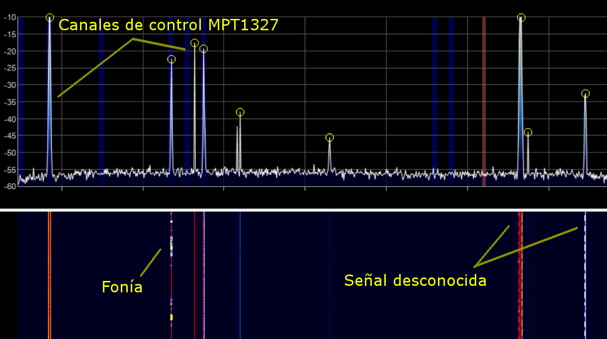 |
| Señal desconocida. Continua y periódica. |
{kind=link}
Y esta, para comparar, es un ejemplo de un canal de control MPT-1327:
Aunque no se parece al ejemplo, sí tienen varias cosas en común: ambas son señales digitales, y aunque la modulación es diferente el ancho de banda es similar. Los más atentos habréis observado que ambas son señales continuas. Eso significa que o bien no hay respuesta, o si la hay se espera por otra frecuencia diferente. En el primer caso se trataría de algún tipo de radiodifusión; en el segundo caso estaríamos captando el canal de bajada de algún sistema bidireccional.
Diríamos que es una señal digital modulada en FM estrecha mediante subportadora de audio, práctica muy habitual. Busqué en Internet por si encontraba qué era, sin resultado.
Capturamos una muestra y la abriremos en un editor de sonido. En un primer momento nos serviría con la grabación desde SDRSharp. Pero más adelante necesitaremos capturar gran cantidad de paquetes para deducir el protocolo, por lo tanto a la larga nos vendrá bien un receptor por línea de comandos.
Usando Gnuradio programaremos un sencillo receptor de FM estrecha, este sería el diagrama de bloques:
| 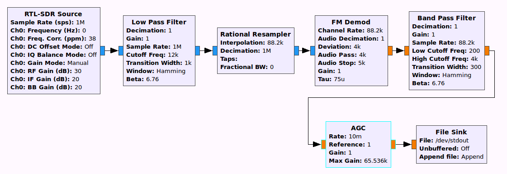 |
| Esquema del receptor FM. |
{kind=link}
Consta de una fuente RTL-SDR, y a continuación un paso bajo con corte en 12kHz para quedarnos sólo con el canal principal.
Después insertamos un resampler para bajar la frecuencia de muestreo de 1MHz a, por ejemplo, 88.2kHz. Lo siguiente es un demodulador de FM, que transformará las muestras I/Q en valores de coma flotante. Fijaremos la desviación máxima en 5kHz ya que la máxima frecuencia útil no supera los 2400Hz, como luego veremos.
El demodulador FM traducirá cualquier desviación entre la frecuencia de sintonía y la portadora de FM en una componente continua. Por esa razón siempre debe estar seguido de un filtro paso alto. En caso contrario deberíamos centrar muy bien la frecuencia o la salida se saturaría rápidamente. Hemos optado por un filtro paso banda entre los 300 y 4000Hz.
Una vez demodulada y filtrada la señal en banda base la amplificaremos. La ventaja de usar un amplificador con Control Automático de Ganancia es librarnos del potenciómetro de volumen, dado que este ya mantiene constante el nivel de la envolvente.
Finalmente volcamos las muestras a la salida estándar de donde las recogeremos en el paso siguiente.
Otra opción, muy práctica por ejemplo en Raspberry, es utilizar el comando rtl_fm. Es muy conveniente en sistemas limitados o sin entorno gráfico. Eso sí, el procesado posterior corre de nuestra cuenta.
rtl_fm -p 47 -g 49 -f $FREQ -s 20000 -
Este comando instancia un demodulador de FM estrecha. El muestreo sería a 20000Hz lo que teóricamente nos permitiría captar hasta 10kHz, un ancho de canal suficiente.
Como ya sabéis, en un demodulador de FM la salida es proporcional a la desviación respecto a la frecuencia central. El emisor transmite con una cierta desviación, y mientras más ancho pongamos el canal menor será comparativamente la desviación y por tanto la salida del receptor. O sea, si configuramos un ancho de banda demasiado grande empeorará la relación señal ruido.
Por otra parte, si ajustamos el ancho de banda a la desviación del emisor, encontraremos problemas debidos a la baja estabilidad en frecuencia de los receptores RTL-SDR. En el comando anterior hemos especificado un error de 47 ppm. Realmente el error varía con la temperatura. Cuando el receptor se calienta o se enfría la frecuencia real de sintonía cambia ligeramente. Si hubiéramos especificado un ancho de canal muy estrecho tendríamos mejor relación señal/ruido al principio pero con cualquier cambio de temperatura perderíamos la señal.
Necesitamos filtrar y amplificar la salida del receptor, lo haremos utilizando el comando sox. Seguramente estáis familiarizados con el uso de SOX, aún así permitidme explicarlo de todos modos.
sox -t raw -r 20000 -es -b 16 -c 1 - \
-t raw -r 44100 - \
sinc 300-3200 compand 0.01,0.01 -100,0 -20
Este comando se divide en tres partes. La primera parte se refiere a la entrada de datos. El programa rtl_fm genera muestras de 16bit en formato entero con signo, -t raw -r 20000 -es -b 16 -c 1 - indica leer muestras de la entrada estándar, en formato binario entero de 16 bits, a un ritmo de 20kHz, un sólo canal.
La segunda parte hace referencia a la salida. -t raw -r 44100 - quiere decir que la salida la haremos también por la salida estándar y de igual modo en formato binario, pero con un muestreo de 44100Hz. Remuestreando la señal no vamos a ganar calidad pero nos facilitará luego el proceso posterior.
Tras la salida listamos los efectos deseados: sinc 300-3200 consiste en un filtro paso banda entre 300 y 3200Hz y compand 0.01,0.01 -100,0 -13 hace las veces de Control Automático de Ganancia. En este momento los valores son orientativos, más adelante podríamos ajustarlos por experimentación.
El comando compand tiene, a su vez, otros tres argumentos. El primer par de números son los tiempos durante los que promediaremos la señal de entrada con el objetivo de determinar su valor medio. El primero de ellos se llama parámetro de ataque y se tiene en cuenta al bajar el volumen de una entrada muy alta. El segundo tiempo, llamado de relajación, es similar pero actúa al subir el volumen de una entrada tenue.
Lo típico es tener un tiempo de ataque corto (0.3s) para que el AGC reaccione y compense rápidamente las subidas de intensidad repentinas. Mientras el tiempo de relajación suele ser más alto (0.8s), de esta forma sube el volumen gradualmente en los pasajes suaves. Fijando un tiempo de relajación corto, de sólo 0.01s, lo forzamos a compensar rápidamente cualquier cambio.
El siguiente parámetro son puntos de la función de transferencia. En nuestro caso significa "amplificar de forma que partiendo de -100dB alcance los 0dB", es decir, llevar todo a 0dB por débil que sea. El tercer número, -13, es un valor de ganancia general determinado por experimentación que produce el mayor nivel de señal con los parámetros anteriores sin llegar a la saturación.
Modulación de audiofrecuencia
Ya tenemos nuestra señal de audio. Lo siguiente es identificar su modulación. Podría ser de amplitud, de frecuencia o de fase (u otras combinaciones raras). Las dos primeras se identifican con facilidad, la de fase requiere cierta experiencia. Luego dentro de cada grupo hay variantes.
Empecemos viendo la señal en un editor de sonido:
| 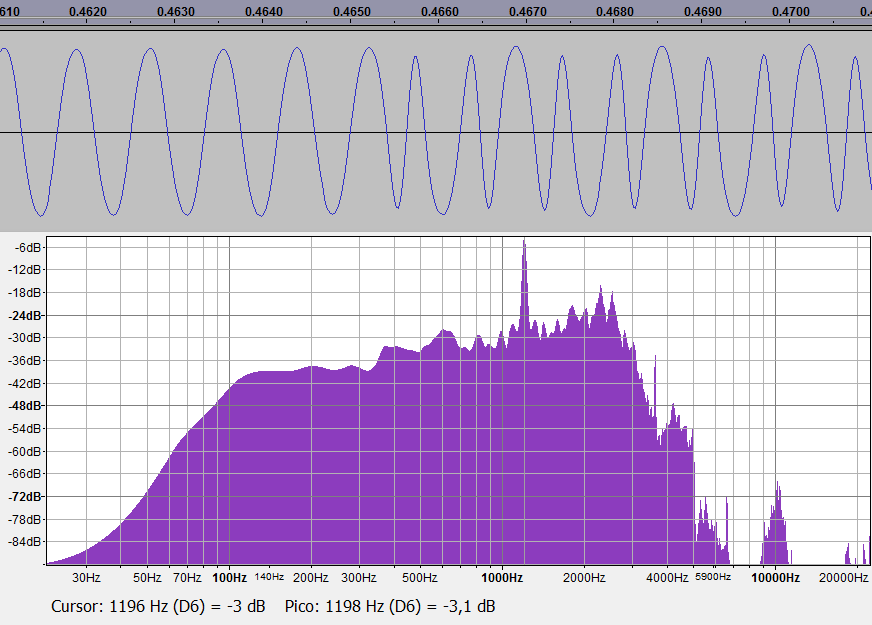 |
| Señal en los dominios del tiempo y la frecuencia. |
{kind=link}
La amplitud es más o menos constante, la fase también. Podría tratarse de alguna variante de FSK. Parece que la frecuencia predominante es 1200Hz. Lo siguiente es ver si podemos identificar una unidad mínima de cambio. A veces se puede ver a ojo. Todo este artículo va de reconocer patrones. Fijémonos en los periodos: hay periodos de una frecuencia entre semiperiodos de otra. Parecen existir dos frecuencias: 1200 y 2400Hz. Llamamos H a la alta y L a la baja frecuencia.
| 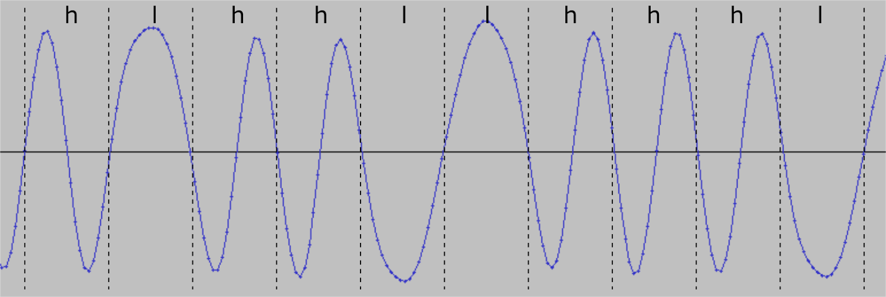 |
| Demodulación estimada "a mano". |
{kind=link}
En una modulación FSK binaria, una frecuencia suele ser doble de la otra. Y, además, el bitrate (la tasa de transmisión de datos) igual a la frecuencia inferior. Tal condición facilita las cosas a la hora de cambiar una frecuencia por la otra. Ya que los cambios se producen tras un periodo completo de la frecuencia inferior, o dos periodos completos de la frecuencia superior -por ser la frecuencia doble-. No hay inversión de la fase, ni discontinuidades en la amplitud.
No es obligatorio. En esta ocasión, encontramos semiperiodos de 1200Hz entremezclados con periodos completos de 2400Hz. Lo cual nos lleva a pensar que el bitrate no es 1200Hz sino 2400Hz, produciéndose un cambio por semiperiodo de 1200 o por periodo completo de 2400.
Una consecuencia de cambiar tras un semiperiodo es la inversión de fase. En la imagen anterior, el segundo periodo h está en oposición de fase respecto al primer periodo h debido a que están separados por un semiperiodo l. No sucede igual cuando dos periodos h están separados por un periodo completo l.
Por tanto es una modulación de frecuencia, pero también de fase. Hay una modulación llamada FFSK (Fast FSK), o también Minimum-shift keying que podría encajar en esta descripción. Para comprobarlo tomaremos una señal MSK junto con la de prueba y haremos un análisis básico. Esta es la transformada de Fourier del pobre.
Se trata de identificar los cruces por cero de la entrada y contar cuántas muestras separan dos cruces consecutivos. Por supuesto, sólo funciona correctamente si la señal está centrada. En cada semiperiodo se produce un paso por cero. De ahí haciendo un histograma del número de muestras entre ellos tenemos un análisis de frecuencias muy básico:
| 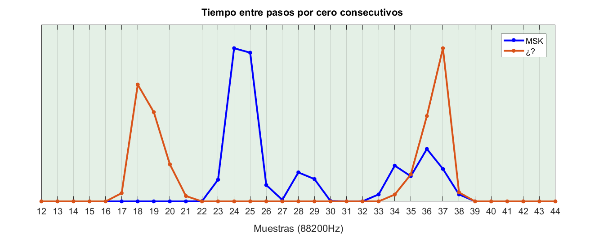 |
| Comparativa de pasos por cero entre FFSK y nuestra señal. |
{kind=link}
No obstante, nos basta para apreciar la diferencia. En nuestra señal hay dos frecuencias perfectamente diferenciadas. Los cruces por cero se producen cada 18-19 muestras, o bien cada 36-37. En MSK hay un pico en las 24-25 muestras (equivalente a una frecuencia de 1800Hz) otro pico en la de 2400 y luego varias intermedias.
A la vista del resultado optamos por tratar esta modulación como BFSK-2400 (Binary Frequency-shift keying con un bitrate de 2400Hz). Ignoro si este esquema tiene algún nombre técnico más específico. Daos cuenta de que es la opción más lógica, sí, pero por lo que sabemos hasta ahora podría ser correcta o equivocada.
Existen múltiples algoritmos para demodular FSK. Hoy os propongo uno la mar de sencillo: un detector de paso por cero. Calcularemos el valor absoluto de la entrada y contaremos el tiempo entre dos cruces consecutivos para determinar si se trata de 1200 o 2400Hz.
La primera tiene un semiperiodo de 416us y la segunda de 208us. El promedio entre ambos semiperiodos es 312us, llamémoslo Tau. También definimos unas cotas inferior y superior arbitrarias clasificaremos el tiempo entre un cruce y otro:
- Si está fuera de los límites marcados, la frecuencia está muy lejos de las deseadas. Sería un error de demodulación.
- Estando dentro de los límites, si el tiempo está por debajo del promedio Tau lo consideraremos un semiperiodo de la frecuencia superior (2400Hz). Y si está por encima un semiperiodo de la frecuencia inferior (1200Hz)
Dedujimos anteriormente que cada símbolo constaba de un semiperiodo de 1200Hz o un periodo completo de 2400Hz. No esperamos ningún semiperiodo aislado de 2400Hz; si lo halláramos se trataría de un error. Escribiremos 'h' al encontrar un periodo completo de 2400Hz y 'l' al encontrar un semiperiodo de 1200Hz.
A la salida de nuestro demodulador tendremos una secuencia de 'h' y 'l' tal como:
... llllllllllllllllllllllllllllllllllllllllllllllllllllllllllllllllllllllllllll
lllllllllllllllllllhlhlhlhlhlhlhlhlhlhlhlllllllllhllllhhhhlhhllhhhlllhlhlhlhhhlh
hlhllhhhlhhhhhhhlhlhhhhhhhhhlhhhhhhhhhlhlhhhhhhhlhlhhhhhhhlhhhhhhhhhlhhhhhhhhhlh
hhhhhhhhlhhlhhhhhhlhlhhhhhhhlhhhhhhhhhlhhhhhhhhhlhhhhhhhhhlhllhhhhhhlhlhhhhhhhlh
hhhhhhhhlhhhhhhhhhlhhhhhhhhhlhhhlhhhhhlhlhhhhhhhlhhhhhhhhhlhhhhhhhhhlhhhhhhhhhlh
lhlhhhhhlhlhhhhhhhlhhhhhhhhhlhhllllhlllhlhlllhlhllllllllllllllllllllllllllllllll
lllllllllllllllllllllllllllllllllllllllllllllllllllllllllllllllllllllllllll ...
Código de línea
Para continuar trataremos de encontrar el código de línea empleado. Comenzaremos por el más sencillo, NRZL, donde la frecuencia baja (un símbolo l) representa un 1 lógico y la frecuencia alta (la h) un 0 lógico. De nuevo no tenemos motivos para pensar que sea la opción correcta, también podría ser a la inversa.
Este sería el mismo paquete anterior decodificado en bits:
.... 111111111111111111111111111111111111111111111111111111111111111111111111111
11111111111111110101010101010101010101111111110111100001001100011101010100010010
11000100000001010000000001000000000101000000010100000001000000000100000000010000
00000100100000010100000001000000000100000000010000000001011000000101000000010000
00000100000000010000000001000100000101000000010000000001000000000100000000010101
0000010100000001000000000100111101110101110101111111111111111111111111111111 ...
A primera vista tiene muchos ceros. Eso es bueno: estadísticamente los valores bajos son más frecuentes que los valores altos; también es habitual rellenar campos vacíos con ceros. Veamos si podemos deducir algún patrón en una muestra de varios paquetes.
El más importante de todos es la cabecera. En general cualquier sistema espera recibir unos bits concretos al comienzo para saber que está escuchando un paquete y no el ruido de fondo. Diríamos que la cabecera es casi obligatoria. Por tanto, entre los bits capturados buscaremos una secuencia común al inicio.
En este caso es fácil porque la señal es un flujo continuo y se ve claramente donde empieza y donde acaba cada trama. Basta con tomar como un paquete cualquier cosa entre una secuencia de más de 10 unos seguidos.
| 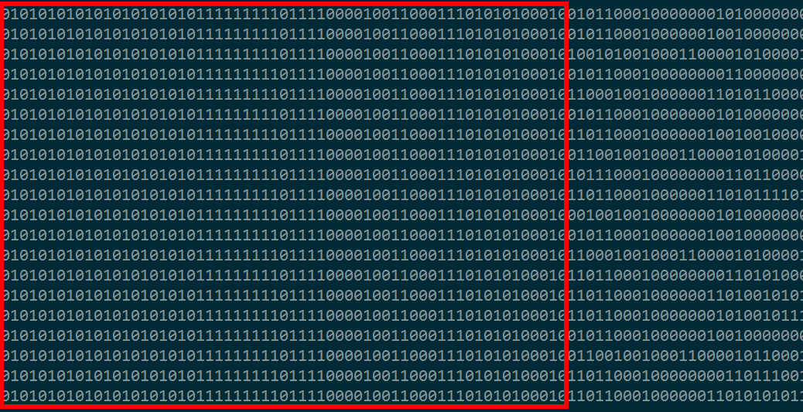 |
| Apreciamos que al principio de todos los paquetes hay ciertos bits invariantes. |
{kind=link}
Lo siguiente es buscar una marca de final del paquete. A diferencia de la cabecera no siempre existe. Para averiguarlo alineamos los finales y comprobamos si tienen algo en común.
| 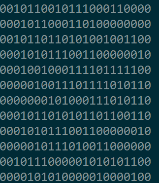 |
| No se aprecia ningún patrón común al final de los paquetes. |
{kind=link}
No, parece. Sin embargo, el receptor debe tener alguna manera de saber si ha terminado de recibir la trama y la ha recibido completa. De no hay una marca al final la otra posibilidad es hacer constar la longitud dentro del mensaje. Habría otra posibilidad: dar por terminada la trama cuando hubiera una secuencia de unos suficientemente larga. Pero no resulta práctico.
Serialización de bytes
Una vez tengamos una muestra más o menos amplia de tramas, pasaremos a analizarlas. Como trabajar en binario es tedioso, buscaremos alguna forma de agrupar los bits en bytes.
Hay protocolos orientados a bits y otros orientados a bytes. Los orientados a bits se caracterizan por ser tramas de corta duración, tal como mandos a distancia sencillos. En este caso no hay más que poner unos cuantos paquetes alineados y los grupos saltan a la vista.
| 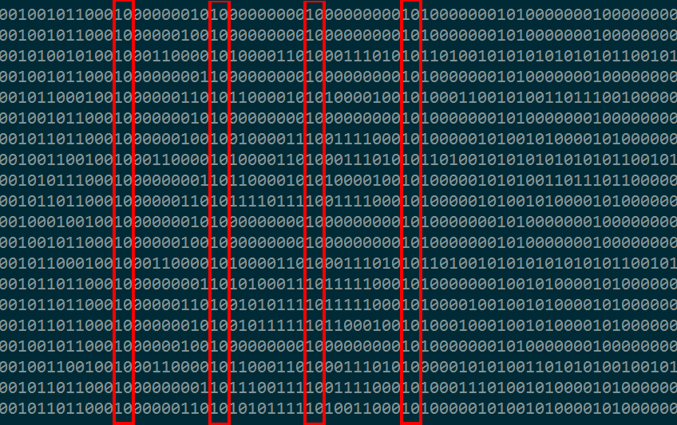 |
| Los grupos parecen separados por un 1 y un 0. |
{kind=link}
Hay grupos de 8 bits que varían separados siempre por un 1 y un 0. Lo de 8 bits está muy bien, pero lo de separarlos por un 1 y un 0 es raro.
...--10--------10--------10--------10---...
Podría tratarse de una marca de separación en sí:
...-- 10 -------- 10 -------- 10 -------- 10 ---...
O bien los grupos podrían empezar por 0 y terminar por 1, así:
...--1 0--------1 0--------1 0--------1 0---...
No conozco ningún protocolo que separe los bytes usando la marca 10 (aunque podría haberlo), pero si reconozco el patrón 0--------1. Es una transmisión serie de 8 bits más un bit de start y un bit de stop. El bit de start suele ser 0 y el bit de parada un 1.
Recolocando los bytes según lo anterior obtendríamos:
0 10101010 1
0 10101010 1
0 11111111 1
0 11110000 1
0 01100011 1
0 10101000 1
0 01011000 1
0 00000010 1
...
¡Sí! Encajan incluso los bits de la cabecera.
En este tipo de esquemas suele incorporarse también un bit de paridad par o impar que es el primero o el último. Si ese fuera el caso estaríamos ante un código de 7 bits más uno de paridad. Contemos los unos de cada bloque para comprobarlo.
El primer y segundo bloques tienen ambos 4 unos; el tercer bloque 8; el cuarto bloque 4, el quinto 4 unos también. Se momento se cumple paridad par. El sexto byte tiene 3 unos... podría ser un error, no lo contamos. El séptimo tiene otros 3, el octavo sólo un uno... Descartamos lo de la paridad.
¿Bloques de 8 bits, con bit de inicio, bit de parada y sin paridad? No me cuadra. Antes de seguir avanzando replanteémonos lo que llevamos.
Durante un proceso de investigación de cualquier tipo, también de ingeniería inversa, es imprescindible tomar notas donde apuntamos los pasos y las conclusiones hechas. Precisamente porque no sabemos cuándo vamos a llegar a una conclusión errónea y nos va a obligar a volver sobre nuestros pasos. Probemos con otro código de línea a ver si encaja mejor.
Código de línea (segunda parte)
Habíamos propuesto inicialmente un código NRZL donde la alta frecuencia equivale a 0 (más propiamente dicho, al espacio) y la baja a uno (o marca).
Baja frecuencia (l) = 1 (marca)
Alta frecuencia (h) = 0 (espacio)
Podría ser al revés, pero eso tan solo invertiría los bits. Obtendríamos muchos bits a 1, el bit de stop se convertiría en 0 y el de start en 1 y seguiríamos sin tener paridad de ningún tipo. Con eso no ganamos nada.
El siguiente linecode más habitual es sin retorno a cero de tipo marca o de tipo espacio (NRZ-M o NRZ-S). En dicha codificación se le asigna un valor a los cambios de frecuencia en vez a las frecuencias en sí. En un código NRZ-M un 1 quiere decir "cambio de valor" y un 0 indica "mantener el valor actual". En NRZ-S es igual pero al revés.
¿Con cuál de las dos probamos primero? Si fuera una codificación NRZ-M la secuencia constante de unos que separa dos tramas adyacentes se convertiría en una secuencia de 1 y 0 alternos. Mientras que usando NRZ-S sería una secuencia continua de ceros. Lo segundo es mucho más probable.
Probemos un NRZ-S. El paquete anterior ahora se decodificaría así:
... 0000000000000000000000000000000000000000000000000000000000000000000000000000
00000000000000111111111111111111111100000000110001000110101001001111111001101110
10011000000111100000000110000000011110000001111000000110000000011000000001100000
00011011000001111000000110000000011000000001100000000111010000011110000001100000
00011000000001100000000110011000011110000001100000000110000000011000000001111110
00011110000001100000000110100011001111001111000000000000000000000000000000000000
0000000000000000000000000000000000000000000000000000000000000000000000000000 ...
Tiene muchos ceros, y habíamos dicho que eso era bueno. Ahora buscamos cabeceras tal como hicimos antes. Finales no buscamos porque, si no había un patrón antes, ahora tampoco lo habrá. El código de línea puede cambiar los bits, pero secuencias iguales en un código producen secuencias iguales en otro.
Intentemos agrupar los bites con este código.
Serialización de bytes (segunda parte)
Mediante el mismo procedimiento tratamos de separar los grupos. Tomamos varios paquetes, los alineamos y observamos.
| 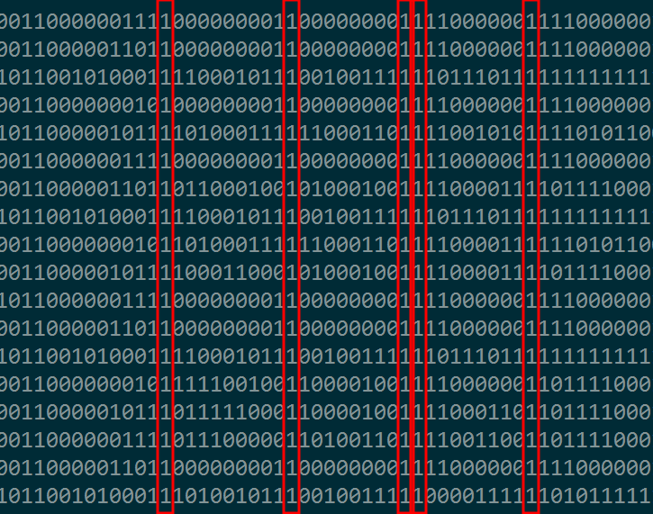 |
| Cada 9 bits, el décimo es necesariamente 1. |
{kind=link}
Cada 9 bits, el décimo siempre es un 1.
...--1---------1---------1---------1--...
Si tomamos ese 1 como bit de parada nos da grupos de 9 bits:
...--1 ---------1 ---------1 --------- 1--...
Un grupo de 9 bit sólo tiene sentido si uno de ellos es un bit de paridad. Lo comprobaremos observando los primeros bloques del paquete anterior:
111111111111111111111
100000000 1
100010001 1
010100100 1
111111001 1
011101001 1
000000111 1
000000001 1
000000001 1
110000001 1
110000001 1
Aquí la cabecera se nos descuadra pero no importa. Diremos que el paquete comienza con un preámbulo de varios unos seguidos sin especificar una longitud concreta.
En cuanto a la paridad de los grupos (sin contar el bit de parada): el primero tiene 1 uno; el segundo grupo, 3; el tercero otros 3; el cuarto 7 unos; el quinto 5; etc. Lo verificamos estadísticamente contando el número de unos en los grupos de una muestra.
Ocurrencias #unos
1 0
10514 1
2 2
9866 3
1 4
7176 5
1646 7
Los grupos pares casi no aparecen. ¡Hay claramente una paridad impar! No puede ser casualidad, hemos encajado una pieza. Será nuestro primer punto de anclaje.
Resumiendo lo que llevamos hasta ahora:
- Modulación en FM estrecha con subportadora de audio.
- Audio modulado en BFSK-2400 usando tonos de 1200 y 2400Hz.
- La frecuencia 1200Hz corresponde a la marca y 2400 el espacio. O viceversa, da igual porque los códigos de línea NRZS o NRZM tan sólo tienen en cuenta las transiciones.
- El código de línea es NRZ-S o NRZ-M, siendo más probable lo primero.
- Los paquetes comienzan con un preámbulo de unos, no hay marca de final.
- La serialización de bytes consiste en grupos de 8 bits más un bit de paridad impar (paridad par, de ser NRZM), un bit de stop y ningún bit de start.
Cabe preguntarse ahora ¿el bit de paridad es el primero o el último de los 9? Lo decidiremos estadísticamente, que siempre es más elegante que hacerlo a cara o cruz. En la muestra de paquetes abunda muchísimo más el grupo 000000001 que el 100000000. Por tanto supondremos que el bit de paridad es el último y el grupo 000000001 equivale a un byte 0 más un bit de paridad al final.
Así pues, el mensaje está formado por grupos tal que:
...
--------o1
--------o1
--------o1
...
donde o es el bit de paridad impar y el 1 un bit de stop.
Antes de poder convertirlo a hexadecimal nos falta por saber lo que se denomina orden de los bits. A veces se llama endianness pero en este contexto tal término resulta ambiguo, ya que por lo general se refiere al orden de los bytes en números con más de un byte. Aquí estamos hablando del orden de los bits dentro de un byte.
Invertir los bytes es una práctica habitual. Supondremos que el orden de los bits está invertido. De nuevo estamos jugando a adivinar. No sabremos si erramos o estamos en lo cierto hasta llegar al siguiente punto de anclaje.
Teniendo el cuenta dicho convenio de bits, los bytes del paquete anterior serían estos:
01 11 4a 3f 2e c0 00 00 03 03 00 00 00 06 03 00 00 00 05 03 00 00 00 0c 03 00 00 00 0f 03 00 62
Ahora es cuando buscaríamos en Google los primeros bytes con la esperanza de encontrar a qué protocolo corresponden. Nada, seguimos por nuestra cuenta.
El último byte casi siempre es algún tipo de checksum o CRC del paquete. Hay dos características que nos permitirían comprobar si es así:
- Alta variabilidad, con distribución prácticamente uniforme en todo el dominio. Por supuesto previa eliminación de paquetes idénticos para no introducir un posible sesgo.
- Cuando dos paquetes coinciden en el resto de sus bytes, necesariamente coinciden en este último. Es decir, no encontramos paquetes en los que coincidan todos los bits salvo el CRC (o si encontramos algunos, no es un número significativo).
La segunda condición es otra forma de decir que el checksum es función del resto de bytes. Utilizaremos un breve programa para analizar la muestra:
Examined packages: 264819
Probability of differ Check for the same bytes: 0.0006%
Distribution of Checks:
00 0.41%
01 0.39%
02 0.39%
...
fd 0.39%
fe 0.38%
ff 0.39%
Un 0.39% es lo esperable en una distribución uniforme de 256 posibles valores. Y la probabilidad de obtener diferente checksum con los mismos bytes es compatible con posibles errores de demodulación. En este caso ambas premisas se cumplen. Luego, para nosotros, este último byte es un checksum. Eso sí, sin conocer el algoritmo generador no podemos sacarle partido.
En busca de la longitud
Hemos convertido el puzle en una sopa de letras. ¿Te gustan la sopas de letras?
| 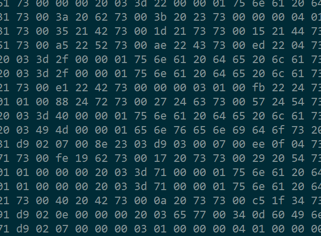 |
| ¿Te gustan las sopas de letras? |
{kind=link}
Tenemos una muestra de tramas, con bytes hexadecimales que ni siquiera sabemos si están bien decodificados y mucho menos qué significan. ¿Cómo continuamos? ¿Os acordáis de que no había ninguna marca de final de paquete y que por lo tanto esperaríamos encontrar la longitud como dato en el paquete? Bien, pues ¡a buscarla!.
Ordenaremos los paquetes que tengamos por longitud. Si de verdad algún byte indica el tamaño, este será igual para todos los paquetes de la misma longitud (o al menos para casi todos, porque siempre podríamos haber recibido paquetes incompletos).
| 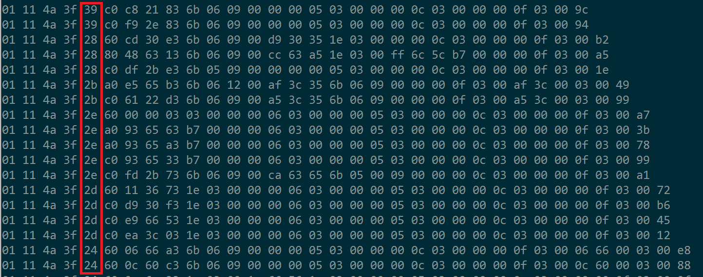 |
| El quinto byte es igual para paquetes de igual longitud. |
{kind=link}
Sí, hay un byte, el quinto, igual para los paquetes de la misma longitud... pero es un poco raro. Empieza valiendo 39h, luego aumenta a 28h, después vale 2Bh y el siguiente es 2Eh. ¿Qué clase de sucesión creciente es esta?
Tal vez no sea la longitud, sino el tipo de paquete. En ese caso la longitud se deduce del tipo de paquete. Y sin las especificaciones del protocolo estamos ante un callejón sin salida. Sin embargo hay paquetes de muchos tamaños distintos y no es habitual tener tantos tipos de paquetes diferentes.
Como la suposición anterior no lleva a ninguna parte, diremos que sí es la longitud, pero nos hemos equivocado de alguna manera al decodificar los bytes. Estudiemos la secuencia con más detenimiento:
Tamaño Byte#5 Binario
29 39 00111001
30 28 00101000
31 2b 00101011
32 2e 00101110
33 2d 00101101
34 24 00100100
35 27 00100111
36 22 00100010
...
El último bit va alternando, lo cual se corresponde con lo esperado en una secuencia. Cuando incrementamos una cuenta en binario el último bit toma valores alternos. La cuestión es que entre un número y el siguiente cambian siempre dos bits: el último y otro más, no necesariamente consecutivos. ¿Podría ser el bit de paridad en realidad el 1º en lugar del 9º y por eso cambian dos: el bit correspondiente y el de paridad? Tal vez, pero aún así eso de "el bit correspondiente" no parece obvio. Sólo me di cuenta tras copiarlo a mano y transcribirlo a una pizarra.
Ignorando el último bit tenemos:
1100
0100
0101
0111
0110
0010
0011
0001
...
Siempre cambia un bit, y sólo uno. Hemos supuesto que es una sucesión creciente. ¿En qué tipo de sucesión cambia sólo un bit entre un número y el siguiente? ¡El código Gray! El código gray se suele utilizar en conmutadores mecánicos porque su característica es precisamente esa: sólo cambia un bit entre dos números consecutivos.
Pensad por ejemplo en una sucesión:
Dec Bin
0 0000
1 0001
2 0010
3 0011
4 0100
...
127 01111111
128 10000000
Entre el 0 y el 1 sólo cambia un bit, pero entre el 1 y el 2 cambian dos bits. Es más, entre 3 y 4 cambian 3 bits. Del 127 al 128 cambian nada menos que 8 bits. Pensad en un ordenador antiguo compuesto por relés electromecánicos. Si para cambiar de un valor al siguiente hay que alterar el estado de 8 relés, seguramente no cambien todos a la vez y podrían darse multitud de estados intermedios. Con el código propuesto por Gray ese problema se evita, porque sea cual sea el número, para pasar al siguiente o al anterior tan sólo se necesita un cambio:
Bec Bin (Gray)
0 0000
1 0001
2 0011
3 0010
4 0110
...
127 01000000
128 11000000
¿Pero por qué los bytes irían codificados en Gray? No estamos usando relés mecánicos. Otro sitio donde se utiliza Gray es al asignar valores en un diagrama de constelación. Así, si erramos al demodular y acabamos en un punto vecino, tan sólo habremos equivocado un bit. Y un bit es relativamente fácil de corregir.
Los grupos tenían un bit de paridad y el último byte parece ser un checksum. Ahora nos encontramos con un código Gray. Aún no conocemos el mecanismo, pero es sin duda un sistema diseñado con intención de poder detectar y corregir errores.
Tras alguna prueba de ensayo y error determinamos la secuencia correcta para interpretar los bytes. Primero deshacer el código gray, y a continuación invertir el orden de los bits. Si hacemos eso con las longitudes obtenemos:
Tamaño Byte#5 De-Gray Reverse Decimal
29 10011100 11101000 00010111 23
30 00010100 00011000 00011000 24
31 11010100 10011000 00011001 25
32 01110100 01011000 00011010 26
33 10110100 11011000 00011011 27
34 00100100 00111000 00011100 28
35 11100100 10111000 00011101 29
36 01000100 01111000 00011110 30
¡Sí! El byte 5 es igual a la longitud del paquete menos 6. ¿Por qué menos 6? Pudiera ser porque en realidad no es el 5º byte sino el 6º, la cabecera tiene un byte más de los que habíamos previsto. O podría ser porque el último byte del paquete no son datos, sino un checksum y no se cuenta.
Da lo mismo, en cualquiera de los dos casos lo importante es que tenemos un segundo punto de anclaje. Procedemos a salvar la partida.
- Modulación radio en FM estrecha con subportadora de audio.
- Modulación audio BFSK-2400 con código de línea NRZS.
- Serialización en grupos de 8 bits más un bit de paridad impar y un bit de stop.
- Codificación Gray con bit menos significativo primero.
- El 5º byte indica el número de bytes que siguen menos uno.
El paquete anterior ahora los decodificaríamos como:
ff 0f c6 15 1a 40 00 00 01 01 00 00 00 02 01 00 00 00 03 01 00 00 00 04 01 00 00 00 05 01 00 de
Y volveríamos a buscar en Google los primeros bytes, de nuevo para no encontrar resultado alguno.
Por ahora la estructura es:
(...1111111111) h h h h l d d d d d d ... c
Hemos representado el preámbulo con unos. h es la cabecera, esos 4 bytes para nosotros no significan nada pero son idénticos en todos los paquetes. l es la longitud. d son datos y c es el checksum.
Al menos tenemos algo para descartar los paquetes incompletos, y junto la paridad también podemos descartar grupos erróneos. Mientras menos ruido tengamos en el estudio, más limpias serán las conclusiones a las que lleguemos.
Al margen de este procedimiento, casi siempre se suele dibujar un histograma de las longitudes más habituales.
| 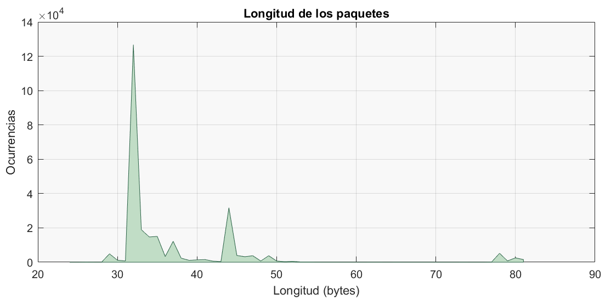 |
| Estadística de longitudes más habituales. ¿Te dice algo? |
{kind=link}
En mi opinión obedece más a la desesperación que a razones prácticas. Sencillamente, a menos que conozcas la estructura interna, el dato de la longitud en un protocolo complejo orientado a bytes es poco más que anecdótico. Aquí vemos tres grupos de paquetes, uno entre 30 y 43 bytes, otro aproximadamente entre 43 y 55 bytes, y finalmente un grupo de paquetes más largos.
Cadenas de texto
Resulta tentador, igualmente, obtener la entropía de los bytes. No obstante, esta técnica sólo funciona bien con estructuras de tamaño fijo. Si los paquetes contienen campos de longitud variable, o hay mezclados distintos tipos de paquete en la muestra, el estudio de la entropía nos confundirá en lugar de ayudarnos. ¿Cómo saber si estamos ante un caso u otro?
Buscando cadenas de texto. Los mensajes de texto suelen ser de tamaño variable. Si los campos del paquete tienen longitud fija encontraremos bytes de padding al final de los textos. Si, en cambio, los campos son de longitud variable encontraremos algún byte indicando la longitud del mensaje.
No todos los protocolos transmiten mensajes de texto, pero es relativamente frecuente en paquetes de tamaño medio. A veces el texto puede estar cifrado, comprimido o no ser ASCII (por ejemplo EBCDIC); lo cual complicaría el estudio. Afortunadamente no es el caso. Utilizar el comando strings sobre una muestra amplia de paquetes binarios nos mostrará si tenemos alguna posibilidad.
> cat packages.hex | xxd -r -p | strings
or@s Buenas
Tardes
...
tardes bienvenidos a
...
servicio, gracias.
Sí, hay texto. Inspeccionando más a fondo, encontramos cadenas como: Se
No hay padding al final de texto, y puede estar tanto al principio como al final del paquete de donde deducimos que:
- Algo indica que ese campo es texto.
- Algo indica la longitud del texto.
Seleccionaremos algunos paquetes con texto. Basándonos en los bytes correspondientes a caracteres imprimibles. A continuación alineamos el comienzo de los textos y observamos los bytes inmediatamente anteriores:
| 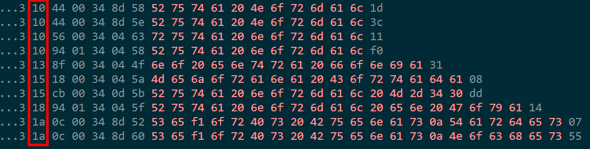 |
| El byte recuadrado podría tener relación con la longitud del campo. |
{kind=link}
Los bytes en rojo son de texto. A la derecha del todo queda el byte final del paquete, el checksum. El byte dentro de un recuadro rojo parece indicar la longitud. Es el mismo para todos los textos con la misma longitud. Cuando el texto se alarga tres bytes, pasa de valer 10 a valer 13. Cuando se extiende dos bytes más, pasa a valer 15. Así sucesivamente. Además en el primer caso 10 hexadecimal equivale a 16 en decimal. Y efectivamente hay 16 posiciones hasta el checksum.
¿Qué es lo que hay entre el byte de la longitud y el comienzo del texto? No lo sabemos aún, podría ser el tipo de mensaje, el destinatario, o quizá el emisor, tal vez algún identificador del mensaje.
Lo más importante ahora es que hemos identificado la longitud. ¿Por qué es importante? Porque nos va a llevar a descubrir la estructura de los campos en un paquete. Veréis, tenemos un paquete con texto justo al final, antes del byte de checksum tal que así:
... 05 01 00 00 00 20 03 0f 7e 00 00 01 6c 65 2e 20 47 72 61 63 69 61 73 34
Para orientaros, el byte de longitud es 0f, es decir 15 caracteres de datos y a continuación el checksum 34. Adicionalmente casi todos los campos de texto vienen precedidos por una secuencia 20 03. Ahora buscaremos un paquete en el que el texto no esté al final, puede que cueste encontrarlo pero lo hallaremos guiados por la secuencia 20 03.
... 01 00 00 00 05 01 00 00 00 20 03 05 0e 00 00 01 2e 5b 20 00 01 00 9d
El byte inmediatamente tras 20 03 es la longitud, 05, así pues:
01 00 00 00 05 01 00 00 00 20 03
05 -> longitud
0e 00 00 01 2e -> texto
5b 20 00 01 00 -> resto del paquete
9d -> checksum
Fijémonos ahora en el trozo llamado "resto del paquete". Son 5 bytes. Suponemos que la trama está formada por varios campos y este resto es otro campo más cuyo propósito desconocemos. ¿Esta misma estructura aplicaría al mensaje que decodificamos al principio? Excluimos los bytes ya conocidos y subdividimos el paquete en grupos de 5 bytes:
ff 0f c6 15 1a 40 00 00 01 01 00 00 00 02 01 00 00 00 03 01 00 00 00 04 01 00 00 00 05 01 00 de
ff 0f c6 15 -> cabecera
1a -> longitud del paquete
40 -> ¿tipo?
00 00 01 01 00 -> campo1
00 00 02 01 00 -> campo2
00 00 03 01 00 -> campo3
00 00 04 01 00 -> campo4
00 00 05 01 00 -> campo5
de -> checksum
Parece una trama sin información con todos los campos vacíos. Es típico de las señales continuas. Sirve a las estaciones receptoras para saber cuándo continúan dentro del alcance y cuándo pierden la señal.
En este otro ejemplo hay varios campos vacíos y el último con texto:
ff 0f c6 15
2c
80
d2 0f 21 73 00
40 20 42 73 00
0a 20 73 73 00
c5 1f 34 73 00
5b 19 45 73 00
00 00 20 03 0d 71 00 00 02 20 67 72 61 63 69 61 73 2e
c1
En realidad, indagando un poco se puede descomponer la estructura en:
rr rr tt tt ll dd dd dd ...
Los bytes rr se refieren al receptor (siendo 00 00 en campos dirigidos a todos los receptores), tt es el tipo de campo (por ejemplo 20 02 para mensajes broadcast, 20 03 para mensajes dirigidos), ll es la longitud y a continuación los datos.
La estructura se cumple para todos los paquetes recibidos correctamente. Este será nuestro tercer y último punto de anclaje.
Pero dejaremos aquí el artículo. Pues mi objetivo era únicamente encontrar el cometido de la señal, no abundar en los detalles del protocolo.
Qué es
Toda esta labor tenía como objetivo averiguar el origen de la señal y lo he conseguido. Pese a la poca relevancia de los mensajes captados para cualquiera ajeno a la empresa, no me parece apropiado divulgar el origen exacto.
Sí explicaré, para satisfacer vuestra curiosidad y premiar a quienes habéis leído hasta el final que, a juzgar por el contenido de los mensajes, se trata del canal de bajada de un sistema de gestión de flotas. En concreto un sistema que muchas empresas han venido a denominar Sistema de Ayuda a la Explotación (SAE).
| 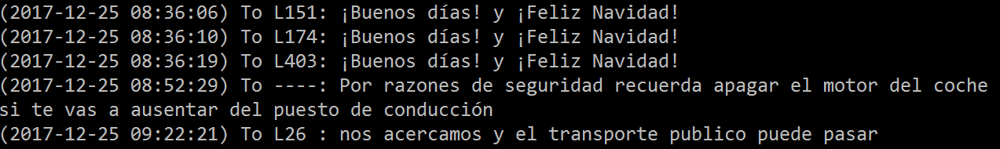 |
| La señal desconocida ya no lo es. |
{kind=link}
Imaginad la complicación de gestionar, por ejemplo, una flota de autobuses en una gran ciudad. Con calles cortadas, vehículos mal aparcados, coches que se averían, colisiones, atascos de tráfico, incidentes con viajeros, objetos perdidos, etc. La logística de mantener una frecuencia constante en una ruta exige conocer en todo momento la posición de la flota y su estado, así como enviar avisos en tiempo real a un coche, a toda la línea o a todos en general.
Si os interesa el tema, hay bastante información al respecto en Internet. Por dar algún enlace tenéis: Sistemas De Monitorización De La Flota De Autobuses En Tiempo Real.
En cuanto al proceso, estoy seguro de que lo habéis disfrutado si contáis con la paciencia y el interés para seguirlo y comprenderlo.
Feliz Navidad.